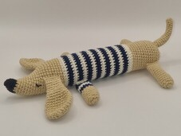
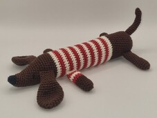
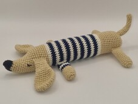
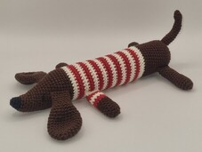

Un poco de nosotros
 



¡Hola! Mi nombre es Alaia, soy una Dachshund, más conocida como perro salchicha o teckel. Como todas las
salchichas, soy un poco loca, tengo mucha personalidad y un gran corazón.
Un día mi mamá, que me
quiere mucho, tejió un teckelines y la hizo muy feliz. Así fue como empezó a tejer muchos teckelines
porque ella dice que, la felicidad cuando se comparte, se multiplica.